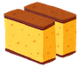

CASTELLA.ART  : Creating a
scientific framework for attaining nibbāna in this life.
[Open-Source Mobile App coming up soon.]
[Open-Source Mobile App coming up soon.]
CASTELLA (カステ) is a delicious abbreviation for
Category-theoretical Approach to Śūnyatā via the Topological induction of Equanimity & Liberation Lattice unto nibbāna
CASTELLA's aim is to lay the mathematical foundation to help you in your spiritual journey towards the deathless element via the total absolute understanding of the true nature of reality, which is said to transcend all forms, senses, perceptions and mental constructs. In the Buddhist tradition, the deathless element is what is referred to as nibbāna or nirvāṇa.
"May I attain nibbāna in this life, and so I can put a full completion (圓滿; परिपूर्ण) into this app, and so may it bring loveliness into your life the same way the Japanese cake brightens up my day!" --- Archy
{> As of 2024, The CASTELLA Mobile App is still in active development. Meanwhile, if you are new to the idea of Śūnyatā, you can get yourself familiar with the Heart Sūtra. }
{ When one has familiarized oneself with the notion of Śūnyatā, the next step is to practice samatha-vipassanā each day for the realization of the Seven Factors of Awakening (while aligning oneself on the Eightfold Path ☸️ - such is the Middle Way) }
“And what, bhikkhus, is the path leading to the unconditioned? Here, bhikkhus, a bhikkhu develops the enlightenment factor of mindfulness, which is based upon seclusion, dispassion, and cessation, maturing in release: this is called the path leading to the unconditioned….”
“And what, bhikkhus, is the path leading to the unconditioned? Here, bhikkhus, a bhikkhu develops the enlightenment factor of discrimination of states … the enlightenment factor of energy … the enlightenment factor of rapture … the enlightenment factor of tranquillity … the enlightenment factor of concentration … the enlightenment factor of equanimity, which is based upon seclusion, dispassion, and cessation, maturing in release: this is called the path leading to the unconditioned….”
-- SN43.12 vii-viii
{ There are many nice sutras to read before vipassanā meditation practices. Below is one for example }
Thus have I heard. On one occasion the Blessed One was dwelling at Baraṇasi in the Deer Park at Isipatana. There the Blessed One addressed the bhikkhus of the group of five thus: “Bhikkhus!”
“Venerable sir!” those bhikkhus replied. The Blessed One said this:
“Bhikkhus, form is nonself. For if, bhikkhus, form were self, this form would not lead to affliction, and it would be possible to have it of form: ‘Let my form be thus; let my form not be thus.’ But because form is nonself, form leads to affliction, and it is not possible to have it of form: ‘Let my form be thus; let my form not be thus.’
“Feeling is nonself…. … Perception is nonself…. Volitional formations are nonself…. Consciousness is nonself. For if, bhikkhus, consciousness were self, this consciousness would not lead to affliction, and it would be possible to have it of consciousness: ‘Let my consciousness be thus; let my consciousness not be thus.’ But because consciousness is nonself, consciousness leads to affliction, and it is not possible to have it of consciousness: ‘Let my consciousness be thus; let my consciousness not be thus.’
“What do you think, bhikkhus, is form permanent or impermanent?”—“Impermanent, venerable sir.”—“Is what is impermanent suffering or happiness?”—“Suffering, venerable sir.”—“Is what is impermanent, suffering, and subject to change fit to be regarded thus: ‘This is mine, this I am, this is my self’?”—“No, venerable sir.”
“Is feeling permanent or impermanent?… Is perception permanent or impermanent?… Are volitional formations permanent or impermanent?… Is consciousness permanent or impermanent?”—“Impermanent, venerable sir.”—“Is what is impermanent suffering or happiness?”— “Suffering, venerable sir.”—“Is what is impermanent, suffering, and subject to change fit to be regarded thus: ‘This is mine, this I am, this is my self’?”—“No, venerable sir.”
“Therefore, bhikkhus, any kind of form whatsoever, whether past, future, or present, internal or external, gross or subtle, inferior or superior, far or near, all form should be seen as it really is with correct wisdom thus: ‘This is not mine, this I am not, this is not my self.’
“Any kind of feeling whatsoever … Any kind of perception whatsoever … Any kind of volitional formations whatsoever … Any kind of consciousness whatsoever, whether past, future, or present, internal or external, gross or subtle, inferior or superior, far or near, all consciousness should be seen as it really is with correct wisdom thus: ‘This is not mine, this I am not, this is not my self.’
“Seeing thus, bhikkhus, the instructed noble disciple experiences revulsion towards form, revulsion towards feeling, revulsion towards perception, revulsion towards volitional formations, revulsion towards consciousness. Experiencing revulsion, he becomes dispassionate. Through dispassion his mind is liberated. When it is liberated there comes the knowledge: ‘It’s liberated.’ He understands: ‘Destroyed is birth, the holy life has been lived, what had to be done has been done, there is no more for this state of being.’”
That is what the Blessed One said. Elated, those bhikkhus delighted in the Blessed One’s statement. And while this discourse was being spoken, the minds of the bhikkhus of the group of five were liberated from the taints by nonclinging.
-- SN22.59
{ Before one can go deeper into understanding the true nature of reality, an often recommended first milestone is to enter the first dhyāna && this is where the pragmatic aspect of the CASTELLA framework comes in , together with its mathematical formalization. [Currently still in active development; coming up in 2025~2026] }